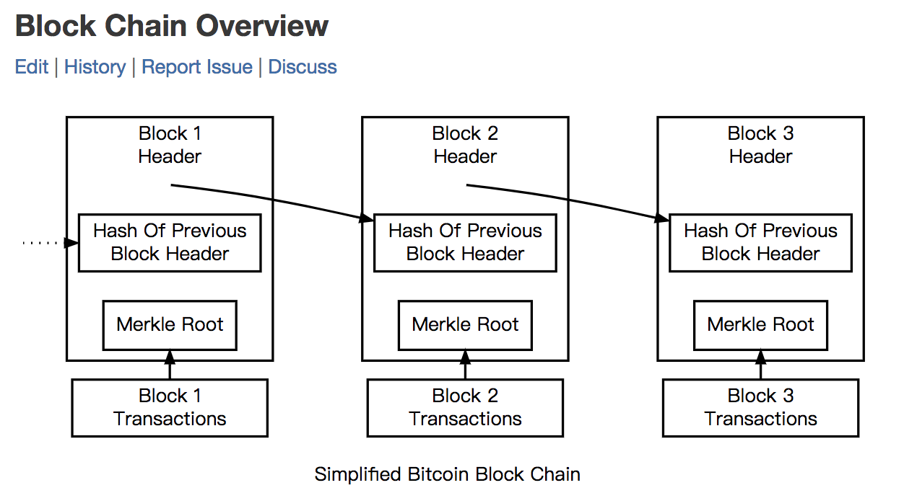
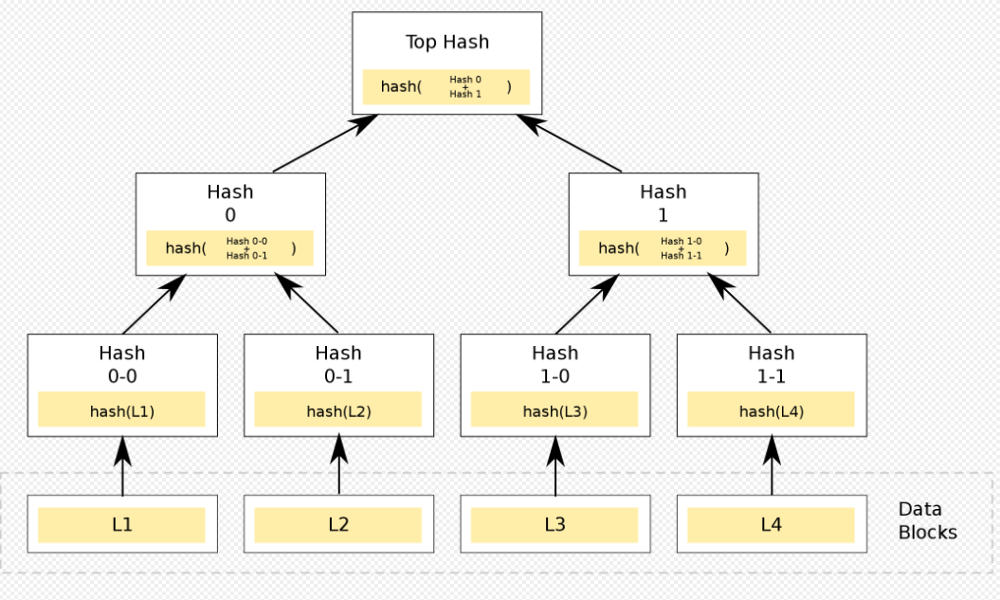
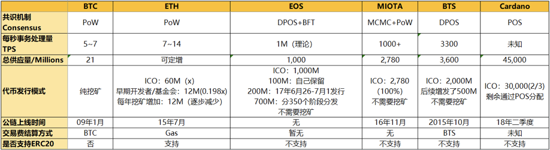

<!doctype html>
<html lang="en">
<head>

    <meta charset="utf-8">
    <meta http-equiv="X-UA-Compatible" content="IE=edge">
    <meta name="viewport" content="width=device-width, initial-scale=1">
    
    <meta name="referrer" content="no-referrer-when-downgrade">
    

    <title>区块链学习--3技术中 | 超级阵雨的乌托邦星球</title>
    <meta property="og:title" content="区块链学习--3技术中 - 超级阵雨的乌托邦星球">
    <meta property="og:type" content="article">
        
    <meta property="article:published_time" content='2021-02-07T16:00:25&#43;08:00'>
        
        
    <meta property="article:modified_time" content='2021-02-07T16:00:25&#43;08:00'>
        
    <meta name="Keywords" content="">
    <meta name="description" content="区块链学习--3技术中">
        <meta name="author" content="超级阵雨">
        
    <meta property="og:url" content="https://zhenyu0324.github.io/post/blockchain3/">
    <link rel="shortcut icon" href='/favicon.ico'  type="image/x-icon">

    <link rel="stylesheet" href='/css/normalize.css'>
    <link rel="stylesheet" href='/css/style.css'>
    <script type="text/javascript" src="//cdn.bootcdn.net/ajax/libs/jquery/3.4.1/jquery.min.js"></script>

    
    
    
        <link href="https://cdn.bootcdn.net/ajax/libs/fancybox/3.5.7/jquery.fancybox.min.css" rel="stylesheet">
    
    
    
    
</head>


<body>
    <header id="header" class="clearfix">
    <div class="container">
        <div class="col-group">
            <div class="site-name ">
                
                    <a id="logo" href="https://zhenyu0324.github.io/">
                        超级阵雨的乌托邦星球
                    </a>
                
                
            </div>
            <div>
                <nav id="nav-menu" class="clearfix">
                    
                    
                    <a  href="https://zhenyu0324.github.io/" title="Home">Home</a>
                    
                    <a  href="https://zhenyu0324.github.io/post/" title="Archives">Archives</a>
                    
                    <a  href="https://zhenyu0324.github.io/tags/" title="Tags">Tags</a>
                    
                    <a  href="https://zhenyu0324.github.io/categories/" title="Categories">Categories</a>
                    
                    <a  href="https://zhenyu0324.github.io/about/" title="About">About</a>
                    
                </nav>
            </div>
        </div>
    </div>
</header>

    <div id="body">
        <div class="container">
            <div class="col-group">

                <div class="col-8" id="main">
                    
<div class="res-cons">
    <style type="text/css">
    .post-toc {
        position: fixed;
        width: 200px;
        margin-left: -210px;
        padding: 5px 10px;
        font-family: Athelas, STHeiti, Microsoft Yahei, serif;
        font-size: 12px;
        border: 1px solid rgba(0, 0, 0, .07);
        border-radius: 5px;
        background-color: rgba(255, 255, 255, 0.98);
        background-clip: padding-box;
        -webkit-box-shadow: 1px 1px 2px rgba(0, 0, 0, .125);
        box-shadow: 1px 1px 2px rgba(0, 0, 0, .125);
        word-wrap: break-word;
        white-space: nowrap;
        -webkit-box-sizing: border-box;
        box-sizing: border-box;
        z-index: 999;
        cursor: pointer;
        max-height: 70%;
        overflow-y: auto;
        overflow-x: hidden;
    }

    .post-toc .post-toc-title {
        width: 100%;
        margin: 0 auto;
        font-size: 20px;
        font-weight: 400;
        text-transform: uppercase;
        text-align: center;
    }

    .post-toc .post-toc-content {
        font-size: 15px;
    }

    .post-toc .post-toc-content>nav>ul {
        margin: 10px 0;
    }

    .post-toc .post-toc-content ul {
        padding-left: 20px;
        list-style: square;
        margin: 0.5em;
        line-height: 1.8em;
    }

    .post-toc .post-toc-content ul ul {
        padding-left: 15px;
        display: none;
    }

    @media print,
    screen and (max-width:1057px) {
        .post-toc {
            display: none;
        }
    }
</style>

<script type="text/javascript">
    $(document).ready(function () {
        var postToc = $(".post-toc");
        if (postToc.length) {
            var leftPos = $("#main").offset().left;
            if(leftPos<220){
                postToc.css({"width":leftPos-10,"margin-left":(0-leftPos)})
            }

            var t = postToc.offset().top - 20,
                a = {
                    start: {
                        position: "absolute",
                        top: t
                    },
                    process: {
                        position: "fixed",
                        top: 20
                    },
                };
            $(window).scroll(function () {
                var e = $(window).scrollTop();
                e < t ? postToc.css(a.start) : postToc.css(a.process)
            })
        }
    })
</script>

    <article class="post">
        <header>
            <h1 class="post-title">区块链学习--3技术中</h1>
        </header>
        <date class="post-meta meta-date">
            2021年2月7日
        </date>
        
        <div class="post-meta">
            <span>|</span>
            
            <span class="meta-category"><a href='/categories/%E5%AD%A6%E4%B9%A0%E7%AC%94%E8%AE%B0'>学习笔记</a></span>
            
        </div>
        
        
        <div class="post-meta">
            <span id="busuanzi_container_page_pv">|<span id="busuanzi_value_page_pv"></span><span>
                    阅读</span></span>
        </div>
        
        
        <div class="post-content">
            <h2 id="27-哈希与加密算法">2.7 哈希与加密算法</h2>
<p>核心：<strong>区块链的密码学基础</strong></p>
<p>区块链中主要应用了两类密码学算法：</p>
<ol>
<li>哈希算法</li>
<li>非对称加密算法</li>
</ol>
<h3 id="271-哈希算法">2.7.1 哈希算法</h3>
<p>哈希算法是一类数学函数算法，又称散列算法，它是一种数据映射关系。</p>
<p>为了方便举例，我们假设 h = HASH( X | z )，你输入一个任意长的数据 z，经过哈希运算后，返回给你固定长度的数据 h，z 叫做原像，h 是哈希结果，又称作“数据指纹”，z 可选的数据集合构成了 X</p>
<p>哈希算法具有下面的 4 种特性。</p>
<ol>
<li>原像不可逆。</li>
</ol>
<p>原像不可逆是指对于任意给定的 h，都无法依据 h 自身的信息推导出 z。</p>
<ol start="2">
<li>难题友好性。</li>
</ol>
<p>难题友好性通俗的理解就是如果要得到难题答案，你只能暴力枚举，没有比这更好的方法。在 h = HASH( X | z ) 中，从 h 无法推导出 z，只能不断地计算尝试，那么 z 所在的数值集合构成了 X，X 的大小是哈希算法的安全因子之一。</p>
<ol start="3">
<li>发散性。</li>
</ol>
<p>发散性是指对于任意的 z，即使我们只改动非常少的信息量，例如改动 1 个比特位生成 z&rsquo;，那么 HASH(z) 与 HASH(z&rsquo;) 就是两个大相径庭的结果，完全不相似。</p>
<ol start="4">
<li>抗碰撞性。</li>
</ol>
<p>抗碰撞性是指对于任意两个不相同的 z，那么他们对应的 h 值也不同。如果对于任意的 y 不等于 z，则 HASH(y) 不等于 HASH(z)；满足上述定义哈希特性的算法，我们也称作具有严格抗碰撞性。如果我们任意给定一个 z，你都无法找到另外一个 z&rsquo;，使得其值也等于 h，满足这样的哈希特性的算法就有弱抗碰撞性。</p>
<p>目前流行的 Hash 算法包括了 MD5、SHA-1 和 SHA-2，其中 MD5 被证明不具有强抗碰撞性。SHA （Secure Hash Algorithm）是一个 Hash 函数族，分为 SHA-1、SHA-2、SHA-3，代表了三代哈希标准，目前使用比较多的是 SHA-2 系列。</p>
<h4 id="2711-区块链上的哈希算法">2.7.1.1 区块链上的哈希算法</h4>
<p>哈希算法被广泛地使用在构造和验证区块、交易的完整性上。

        <a data-fancybox="gallery" href="blockChain_3-1.png">
            
        </a>
    </p>
<p>在图中可以看出，当前区块里面包含上一个区块的哈希，形成一个哈希指针链表，由于哈希的发散性，所以这个链表也有极大的发散性。</p>
<h4 id="2712-默克尔树merkle-tree">2.7.1.2 默克尔树（Merkle tree）</h4>
<p>哈希算法的一个重要应用是默克尔树（Merkle tree），默克尔树是一种数据结构，通常是一个二叉树，也有可能是多叉树，它以特定的方式逐层向上计算，直到顶部，最顶层叫做默克尔根，默克尔树最为常见和最简单的是二叉默克尔树。</p>
<p>默克尔树的基本结构如下图。</p>
<p>
        <a data-fancybox="gallery" href="blockChain_3-2.png">
            
        </a>
    </p>
<h3 id="272-非对称加密算法">2.7.2 非对称加密算法</h3>
<p>非对称加密算法是相对于对称算法而言的，这两者组成了密码学的核心内容。</p>
<p>这两者的使用区别体现在密钥是否可以公开，对称密钥要求加解密过程均使用相同的密钥，而非对称加密可以提供一对钥匙，私钥自己保管，公钥可以公开。</p>
<p>常见的对称加密算法有 DES、3DES、AES、IDEA， 常见的非对称加密算法有 RSA、ECC 等。</p>
<p>在非对称算法中，私钥一般是通过一个随机数产生的，这个随机数我们也叫做种子，从这个角度来说，知道了这个随机数也就等于知道了私钥，不过私钥的产生范围非常大，在比特币中是 2 的 256 次方，差不多在 10 的 70 方数量级上。</p>
<p>如果你产生随机数的算法足够均匀分布，私钥碰撞的可能性比中了 1 亿大奖同时被雷劈中的概率还要小数亿倍。所以区块链对产生随机数的算法要求比较高，它要求真实的均匀随机分布，而不是计算机伪随机数。</p>
<h2 id="28-utxo与普通账户模型">2.8 UTXO与普通账户模型</h2>
<p>区块链网络中有两种记账模式，除了 UTXO 模型还有 Account Based 结构，也就是普通账户模型，也叫账户余额模型，前者在比特币系的数字货币中被广泛使用，后者更多是用在智能合约型的区块链上。</p>
<h3 id="281-普通账户模型">2.8.1 普通账户模型</h3>
<p><strong>举例解释定义</strong></p>
<blockquote>
<p>我们先从传统的账户模型出发来聊聊是如何记账的，假设我们现在有一个支付系统，在这个支付系统中有村长和张三两个账户，村长账户里有 100 万，现在要转账给张三 10 万，这其中涉及的操作是这样的：</p>
<p>检查村长的账户余额是否大于 10 万；
把村长的账户扣除 10 万变成 90 万，然后发送一笔转账消息给张三的账户；
张三的账户接受到转账消息，将张三的账户余额加 10 万。
我们可以发现，无论是村长还是张三，都具有一个余额作为状态，即当前余额是记录在某个地方的，只需要读出来即可，这种设计我们叫做账户余额模型。</p>
</blockquote>
<p>如果以上三个步骤是在一个中心化系统中，甚至在同一个数据库中，那将非常简单，会直接退化成一个事务，我们见到的银行账户、信用卡系统、证券交易系统、各种电商类应用，理财类应用基本都是一个中心化系统中的，最多也就是跨表跨数据库。</p>
<p>如果以上的步骤中，村长和张三的账户分属两个不同的系统，例如从 A 银行到 B 银行，就需要经过人民银行支付系统，即可信任的中心化第三方来做中介。</p>
<p>你可能发现了，在跨行转账的这种情况下，是没有办法做事务的，所以 1 和 3 是不同步的，如果 3 操作失败，还需要从 2 倒退到 1 的状态，这个情况叫做冲正交易。</p>
<h3 id="282-utxo-模型">2.8.2 UTXO 模型</h3>
<p>UTXO 全称是：“Unspent Transaction Output”，这指的是：未花费的交易输出。这里面三个单词分别表示 “未花费的”“交易”“输出”，接下来我来详细讲解一下 UTXO 的含义。</p>
<p>UTXO 的核心设计思路是无状态，它记录的是交易事件，而不记录最终状态，也就是说只记录变更事件，用户需要根据历史记录自行计算余额。</p>
<p>如下所示：</p>
<p>　村长　100 万 &ndash;&gt; 张三　10 万 　
　　　　　　　 &ndash;&gt; 村长　90 万</p>
<p>这里其实有三条子记录，左边一条，右边两条，左边叫做输入，右边叫做输出。</p>
<p>输入和输出组成了交易，输入和输入需要满足一些约束条件：</p>
<ol>
<li>任意一个交易必须至少一个输入、一个输出；</li>
<li>输入必须全部移动，不能只使用部分，所以才产生了第二个输出指向村长自己；</li>
<li>输入金额 = 输出金额之和 + 交易手续费，这里必须是等式。</li>
</ol>
<p>对于村长来说，首先构造交易的输入输出，满足上述条件，然后广播到全网，接收方自行判断交易是否属于自己。这里满足约束条件构成的交易模型，也就是村长记录的三条转账事件就是 UTXO 模型。</p>
<h3 id="283-账户余额模型与-utxo-的比较">2.8.3 账户余额模型与 UTXO 的比较</h3>
<ol>
<li>
<p>存储空间，UTXO 占用空间比账户模型高，因为账户模型只记录最终状态。</p>
</li>
<li>
<p>易用性，UTXO 比较难处理，账户模型简单容易理解。例如 UTXO 在使用上，还需要配合高效的 UTXO 组装算法，这个算法要求尽可能降低输入输出的个数，还要让“零钱“归整，算法的复杂度相比账户余额无疑要高。</p>
</li>
<li>
<p>安全性，UTXO 比账户模型要高，UTXO本身具备 ACID 的记账机制，而账户模型需要自行处理，例如重放攻击。</p>
</li>
</ol>
<p>普通账户模型具有较高的自由度，可以让智能合约有更好的发挥空间，并且它避免了 UTXO 的复杂组装逻辑，精度控制上也更为得心应手。</p>
<h3 id="284-utxo-的特性及缺点">2.8.4 UTXO 的特性及缺点</h3>
<p>从计算的角度来说，UTXO 具有非常好的并行支付能力，也就是我们上文中所说的如果没有尺寸限制，一笔交易可以包含任意笔输入输出，同时也没有次序要求，在一笔交易中哪一个 UTXO 在前，哪个在后面不影响最终结果。</p>
<p>从存储的角度来说，UTXO 具有较好的可裁剪特性，可裁剪性指的是 UTXO 类型的交易，如果从最老的那一笔 UTXO 开始截断数据库，那么之前的数据可以删除掉了。</p>
<p>如果想进一步压缩数据尺寸，可以在任意位置截断，记录 UTXO 对应的交易哈希即可，然后从其他节点获取并校验 UTXO，这也是 SPV 轻钱包工作的基础之一。</p>
<p>以太坊中并没有使用比特币的这种 UTXO 设计，这与以太坊的宗旨有关，以太坊的目标是构建通用计算，而比特币是数字货币，需求不同导致设计的不同。</p>
<p>V 神指出了 UTXO 的缺陷，一共有三类。</p>
<ol>
<li>可表达的状态少</li>
<li>区块链盲点（Blockchain-blindness）</li>
<li>价值盲点（Value-blindness）</li>
</ol>
<h2 id="29去中心化与区块链交易性能">2.9去中心化与区块链交易性能</h2>
<p>比特币和以太坊的 TPS 一直被技术领域的人所诟病，或许这与工程师“高性能高并发”的情节有关。</p>
<h3 id="291-去中心化">2.9.1 去中心化</h3>
<p>去中心化与点对点有区别吗？我认为是有的，去中心化是包含了一定<em>政治主观色彩</em>的词汇，点对点只是一个中性词汇，更适合用来描述系统的性质。</p>
<p>去中心化这种说法树立了一个无形的靶子，这个靶子可大可小，大到政府机关，小到小商小贩。</p>
<p>正如我们说的是 P2P 网络，而不是去中心化网络。所以在技术领域使用点对点，而不是去中心化，可以避免这种概念被过度消费，</p>
<h3 id="292技术上的去中心化">2.9.2技术上的去中心化</h3>
<p>我们在聊 DPOS 共识机制的时候，提到过一个 TPS 的计算公式，</p>
<p>TPS = (block_size network_bandwidth witness_performance) / (block_time * witness_count)</p>
<p>其中 witness_count 记账节点的数目与准入门槛在业界的争议比较大，如果完全去中心化的话，首先就意味着记账节点没有准入门槛，记账的节点可以无限多，当然这只是一个理想环境，工程实施的可行性几乎为零。</p>
<p>比特币全球的全节点 1.2 万个，大大小小的挖矿节点只有几十个，常出块的只有 5 大矿池，但是比特币依然没有限制记账节点的准入门槛，以太坊也是如此。而在 EOS 中，既规定了记账节点的数目，又规定了门槛。</p>
<p>可以这么说，控制了记账节点的数量和准入门槛，就等于决定了区块链 TPS 的大小。</p>
<h3 id="293-各个区块链的-tps-指标">2.9.3 各个区块链的 TPS 指标</h3>
<p>我们接下来看看一些区块链项目的 TPS 指标。</p>
<p>
        <a data-fancybox="gallery" href="blockChain_3-3.png">
            
        </a>
    </p>
<p>图中是 TPS 都在千笔以上的区块链项目，通过控制了记账节点的数量，牺牲了去中心化特性提升了 TPS，比如石墨烯系列的 DPOS，Ripple 的共识。</p>
<h3 id="294-业界的可选方案之一sharding-分片">2.9.4 业界的可选方案之一：Sharding 分片</h3>
<p><strong>如何提升 TPS ？</strong></p>
<p>目前一共有两种正在讨论的方案，分别是 Sharding 分片技术和闪电网络。闪电网络旨在解决比特币微小额支付的实时性问题，其中的算法是比特币 TPS 扩展的一种方案。</p>
<p>这两种方案不涉及修改共识机制。如果我们修改为 DPoS 共识机制、DAG 共识算法，也可以提升 TPS，不过不在本篇的讨论范围。</p>
<p>分片技术是一种安装传统数据库分片的扩展，主要思路是将数据库分成多个分区（碎片）并将分区放置在不同的服务器上。</p>
<p>在区块链场景下，全网的节点相当于于分布式数据库中的不同服务器，这时候我们可以将交易分成不同的部分，然后每个记账节点只需要验证交易的一部分即可，而不必验证完整的交易性。</p>
<p>这带来的好处是就是并行化处理，记账节点之间相当于是协作关系，而不再是单纯的独立关系。</p>
<p>随着网络的增长，这种协作关系也可以随之扩展，这种扩展也叫做水平扩容。</p>
<p>分片的两种方案：状态分片、网络分片。</p>
<p>第一种方案是是网络分片，网络分片是我们按照网络进行分区，区域内的交易归集在一起并在区域内进行验证，这样区域内的用户可以享受低延迟高吞吐的 TPS，但是会带来跨区域分片的复杂性。我们也可以将网络分片比喻成数据库集群分区。</p>
<p>其次是状态分片，状态分片是在以太坊上提出的方案，状态分片目前没有确切的技术方案，尚在研究讨论阶段。</p>
<h2 id="210-智能合约与以太坊">2.10 智能合约与以太坊</h2>
<h3 id="2101-智能合约">2.10.1 智能合约</h3>
<p>不同于法律意义上的合约概念，区块链领域的合约表达的是可以“自治自理”的 计算机协议，这套协议具有自我执行、自我验证的属性。</p>
<p>如果完全从技术角度来看，智能合约等价于一段事先就被规定好逻辑和条款的计算机代码被激活运行的状态，同时，智能合约也提供了通用的用户接口，用户可以通过接口与用户交互。</p>
<p>智能合约这一概念早在 20 世纪 90 年代就有人提出，这个人是从事智能合约和数字货币研究的尼克萨博（Nick Szabo）博士，尼克 1996 年在《Extopy》期刊上发表了对智能合约的描述，他认为智能合约是一个由数字表单指定的承诺，这个承诺包含关系到多方执行的一组协议。</p>
<p>从定义中我们可以得知，智能合约由多个协议组成，这些协议包含了用户接口，能表达用户的承诺，它可以安全有效地确定公共网络上的关系。</p>
<p>换句话说，智能合约是一个由计算机处理、可执行合约条款的交易协议，其总体目标是满足协议既定的条件，例如支付、抵押、保密协议。这可以降低合约欺诈造成的损失，降低仲裁和强制执行所产生的成本以及其他的交易成本。</p>
<h3 id="2102-以太坊及其发展历史">2.10.2 以太坊及其发展历史</h3>
<p>以太坊 Ethereum 项目的目标是打造一个去中心化的新一代互联网应用平台，这个平台称作 Dapp 平台。</p>
<p>这些 Dapp 基于以太坊智能合约虚拟机开发、编译、部署，并且可以自定义业务逻辑，部署后全网可见且自动执行，理想情况下不存在宕机、审查、欺诈、第三方干预的情况。</p>
<blockquote>
<p>2013 年底以太坊的创始人 Vitalik 在比特币开发者社区提出了可以运行图灵完备（Turing-complete）形式的应用，但这一思想并没有得到比特币社区的支持。</p>
<p>2014 年，Vitalik 带着自己的想法，宣布以太坊项目正式成立，2014 年上半年开始筹集资金，聚拢一些早期开发者，同年 7 月份进行了为期 42 天的 ICO，共筹集了超过 1800 万美元的比特币。</p>
<p>2015 年 7 月，第一个版本的以太坊发布，主网正式上线，这一阶段 Bug 和设计缺陷较多，多是开发者在使用。</p>
<p>2016 年以太坊发布第二个大版本 Homestead，用户逐渐多了起来，同期也吸纳了不少 Dapp 开发者。</p>
<p>2016 年 6 月，以太坊上发生了著名的黑天鹅事件——TheDAO 事件，这打开了 ICO 市场，同时也造成了以太坊社区分叉，形成了以太坊和以太坊经典两个代币。</p>
<p>2017 年 4 月，ICO 风靡中国，ERC20 提供了低成本方便高效的资金募集方式，为 ICO 提供了极大的便利，趁着数字货币牛市，以太坊的价格涨幅达十多倍，2018 年 1 月以太坊价格突破 1000 美元。</p>
</blockquote>
<h3 id="2103-以太坊的核心概念">2.10.3 以太坊的核心概念</h3>
<p>以太坊核心概念包括：智能合约虚拟机 EVM 和 Solidity 编程语言、账户模型、以太币和 Gas，交易和消息。</p>
<h4 id="21031-智能合约虚拟机-evm-和-solidity-编程语言">2.10.3.1 智能合约虚拟机 EVM 和 Solidity 编程语言</h4>
<p>以太坊的核心概念首先是智能合约。</p>
<p>智能合约包含两部分，一部分是开发语言，主要以 Solidity 为主，Solidity 与 Javascript 语言在使用上十分接近，这极大地降低了 Dapp 开发人员的学习成本。</p>
<p>另一部分就是 EVM。 EVM 是以太坊智能合约虚拟机，我们可以等价理解它为 Javascript、Python 等脚本语言的执行引擎。</p>
<p>它是一个轻量级的虚拟机隔离环境，它并不提供访问本地网络、进程、文件系统的功能，它更像是一个封闭的容器，这个容器里面装了一个正在运行 Dapp，可以看成是无法和外界交互的 Docker Container。</p>
<h4 id="21032-账户模型">2.10.3.2 账户模型</h4>
<p>以太坊并没有采用 UTXO 模型，也不同于银行账户，它是由以太坊开发者设计了自己的账户模型。</p>
<p>以太坊上的账户有两种类型，第一类叫做合约账户 CA（Contracts Accounts)，第二类叫做外部账户 EOA（Externally Owned Accounts）。</p>
<p>简单理解就是：CA 是智能合约代码用的账户，EOA 是人用的账户；所以 CA 可以存储并执行智能合约代码，它的智能被 EOA 激活，它也不保存和存储私钥，合约账户可以调用其他合约。</p>
<p>EOA 则是人们直接控制的账户，可以存储以太币，可以发送交易到合约账户，触发既定的逻辑。EOA 账户由公钥标识，由对应的私钥控制。</p>
<h4 id="21033-以太币和-gas">2.10.3.3 以太币和 Gas</h4>
<p>Gas 是执行智能合约操作的燃料，智能合约的每一个步骤都会消耗 Gas，Gas 是由以太坊的平台代币以太币转化而来，最小单位是 wei，1ETH 相当于 10 的 18 次方 wei。</p>
<p>以太币可以通过 PoW 挖矿而产生，目前以太坊主要通过 GPU 挖矿。挖出一个块可以换得 5 个以太币，并且还有一定的交易费、以及叔伯块的奖励。今年 4 月 6 日爆出著名矿机芯片厂商比特大陆已经开发出针对以太坊的 ASIC 专业矿机，相比 GPU 的效率提升 2.5 倍。</p>
<p>以太坊上的交易与比特币中的 UTXO 交易不同，它是指 EOA 账户将一个经过签名的数据包发送到另外一个账户的过程，这个过程产生的账户状态变化将被存储到以太坊区块链上。</p>
<p>以太坊上除了交易还有消息这个概念，消息指一个合约账户调用其他合约账户的过程，可以类比函数调用过程。</p>
<p>所以以太坊上的 Dapp 如果被触发，有两种可能，第一种是交易触发，第二种是消息触发。</p>
<p>这两种的区别在于前者是 EOA 发起的，后者只能是其他合约账户发起的。</p>
<h4 id="21034-交易和消息">2.10.3.4 交易和消息</h4>
<p>以太坊上的交易与比特币中的 UTXO 交易不同，它是指 EOA 账户将一个经过签名的数据包发送到另外一个账户的过程，这个过程产生的账户状态变化将被存储到以太坊区块链上。</p>
<p>以太坊上除了交易还有消息这个概念，消息指一个合约账户调用其他合约账户的过程，可以类比函数调用过程。</p>
<p>所以以太坊上的 Dapp 如果被触发，有两种可能，第一种是交易触发，第二种是消息触发。</p>
<p>这两种的区别在于前者是 EOA 发起的，后者只能是其他合约账户发起的。</p>
<h4 id="21035-与比特币的主要区别">2.10.3.5 与比特币的主要区别</h4>
<p>以太坊项目又被称作区块链 2.0 项目，这里 2.0 就是指智能合约。那么以太坊与比特币相比，到底智能在那里呢？我们具体来看看。</p>
<p>与比特币相比，以太坊首先不是一个单纯的数字货币项目，它可以提供全世界无差别的区块链智能合约应用平台，包含四大模块：P2P 网络、共识机制、账户模型、加密模块。</p>
<p>区块链的开发者因为智能合约的出现开始分为两类。第一类是公链底层开发者，主要是以 C++ 和 Go 语言为主的全节点开发者，他们需要对区块链各个技术模块有很深的理解。</p>
<p>第二类是智能合约开发者，也就是应用开发者，这类开发者对区块链的运行原理不需要理解很深，只需要会编写 Solidity，了解规范即可。</p>

        </div>

        


        

<div class="post-archive">
    <h2>See Also</h2>
    <ul class="listing">
        
        <li><a href="/post/blockchain2/">区块链学习--2技术上</a></li>
        
        <li><a href="/post/blockchain1/">区块链学习--1区块链基础</a></li>
        
    </ul>
</div>


        <div class="post-meta meta-tags">
            
            <ul class="clearfix">
                
                <li><a href='/tags/%E5%8C%BA%E5%9D%97%E9%93%BE'>区块链</a></li>
                
            </ul>
            
        </div>
    </article>
    
    

    
    
</div>

                    <footer id="footer">
    <div>
        &copy; 2021 <a href="https://zhenyu0324.github.io/">超级阵雨的乌托邦星球 By 超级阵雨</a>
        
    </div>
    <br />
    <div>
        <div class="github-badge">
            <a href="https://gohugo.io/" target="_black" rel="nofollow"><span class="badge-subject">Powered by</span><span class="badge-value bg-blue">Hugo</span></a>
        </div>
        
        <div class="github-badge">
            <a href="https://github.com/flysnow-org/maupassant-hugo" target="_black"><span class="badge-subject">Theme</span><span class="badge-value bg-yellowgreen">Maupassant</span></a>
        </div>
    </div>
</footer>


    
    <script type="text/javascript">
        window.MathJax = {
            tex2jax: {
                inlineMath: [['$', '$']],
                processEscapes: true
                }
            };
    </script>
    <script src='https://cdnjs.cloudflare.com/ajax/libs/mathjax/2.7.5/MathJax.js?config=TeX-MML-AM_CHTML' async></script><script src="https://cdn.bootcdn.net/ajax/libs/fancybox/3.5.7/jquery.fancybox.min.js"></script>

<a id="rocket" href="#top"></a>
<script type="text/javascript" src='/js/totop.js?v=0.0.0' async=""></script>


    <script type="text/javascript" src="//busuanzi.ibruce.info/busuanzi/2.3/busuanzi.pure.mini.js" async></script>


                </div>

                <div id="secondary">
    <section class="widget">
        <form id="search" action='//www.google.com/search' method="get" accept-charset="utf-8" target="_blank" _lpchecked="1">
      
      <input type="text" name="q" maxlength="20" placeholder="Search">
      <input type="hidden" name="sitesearch" value="https://zhenyu0324.github.io/">
      <button type="submit" class="submit icon-search"></button>
</form>
    </section>
    
    <section class="widget">
        <h3 class="widget-title">最近文章</h3>
<ul class="widget-list">
    
    <li>
        <a href="https://zhenyu0324.github.io/post/secondkill2/" title="如何设计秒杀系统(下)">如何设计秒杀系统(下)</a>
    </li>
    
    <li>
        <a href="https://zhenyu0324.github.io/post/secondkill1/" title="如何设计秒杀系统(上)">如何设计秒杀系统(上)</a>
    </li>
    
    <li>
        <a href="https://zhenyu0324.github.io/post/baihuafalv/" title="白话法律笔记">白话法律笔记</a>
    </li>
    
    <li>
        <a href="https://zhenyu0324.github.io/post/blockchain7/" title="区块链学习--7从业区块链">区块链学习--7从业区块链</a>
    </li>
    
    <li>
        <a href="https://zhenyu0324.github.io/post/blockchain6/" title="区块链学习--6区块链与当下互联网">区块链学习--6区块链与当下互联网</a>
    </li>
    
    <li>
        <a href="https://zhenyu0324.github.io/post/blockchain5/" title="区块链学习--5数字货币与数字资产">区块链学习--5数字货币与数字资产</a>
    </li>
    
    <li>
        <a href="https://zhenyu0324.github.io/post/blockchain4/" title="区块链学习--4技术下">区块链学习--4技术下</a>
    </li>
    
    <li>
        <a href="https://zhenyu0324.github.io/post/blockchain3/" title="区块链学习--3技术中">区块链学习--3技术中</a>
    </li>
    
    <li>
        <a href="https://zhenyu0324.github.io/post/blockchain2/" title="区块链学习--2技术上">区块链学习--2技术上</a>
    </li>
    
    <li>
        <a href="https://zhenyu0324.github.io/post/blockchain1/" title="区块链学习--1区块链基础">区块链学习--1区块链基础</a>
    </li>
    
</ul>
    </section>

    

    <section class="widget">
        <h3 class="widget-title"><a href='/categories/'>分类</a></h3>
<ul class="widget-list">
    
    <li><a href="https://zhenyu0324.github.io/categories/%E4%B8%AD%E6%96%87/">中文 (1)</a></li>
    
    <li><a href="https://zhenyu0324.github.io/categories/%E5%AD%A6%E4%B9%A0%E7%AC%94%E8%AE%B0/">学习笔记 (10)</a></li>
    
    <li><a href="https://zhenyu0324.github.io/categories/%E7%AE%97%E6%B3%95%E4%B9%8B%E7%BE%8E/">算法之美 (2)</a></li>
    
</ul>
    </section>

    <section class="widget">
        <h3 class="widget-title"><a href='/tags/'>标签</a></h3>
<div class="tagcloud">
    
    <a href="https://zhenyu0324.github.io/tags/leetcode/">LeetCode</a>
    
    <a href="https://zhenyu0324.github.io/tags/%E4%B8%AD%E6%96%87/">中文</a>
    
    <a href="https://zhenyu0324.github.io/tags/%E5%8C%BA%E5%9D%97%E9%93%BE/">区块链</a>
    
    <a href="https://zhenyu0324.github.io/tags/%E7%99%BD%E8%AF%9D%E6%B3%95%E5%BE%8B/">白话法律</a>
    
    <a href="https://zhenyu0324.github.io/tags/%E7%A7%92%E6%9D%80/">秒杀</a>
    
    <a href="https://zhenyu0324.github.io/tags/%E7%AE%97%E6%B3%95%E4%B9%8B%E7%BE%8E/">算法之美</a>
    
    <a href="https://zhenyu0324.github.io/tags/%E9%93%BE%E8%A1%A8/">链表</a>
    
</div>
    </section>

    

    <section class="widget">
        <h3 class="widget-title">其它</h3>
        <ul class="widget-list">
            <li><a href="https://zhenyu0324.github.io/index.xml">文章 RSS</a></li>
        </ul>
    </section>
</div>
            </div>
        </div>
    </div>
</body>

</html>